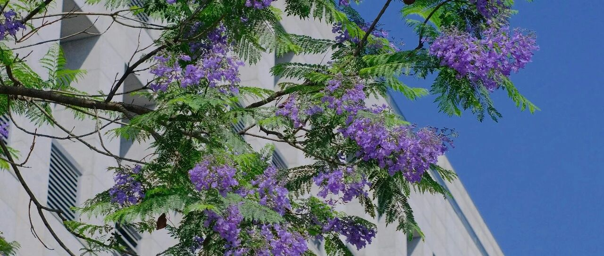

时代悄悄变了
本来昨晚要更新的，结果被朋友拉出去吃饭，推迟到今天。
135加仓了台积电，现在平均成本145刀；90的英伟达看着眼馋，93刀加仓了一部分；387加仓了一些微软。
就这些操作，其他的没动。
现在来新加坡的国人挺多的，晚上吃饭时，朋友说:
现在的新加坡，普通中产不适合呆，这里的生活，只适合小富豪级别（亿元）以上的群体。
还有一类，是年轻的女孩子，很多跑来这里做“肉制品进出口贸易”，也就是卖皮肉，来钱快。这群体不小。
也正常，年轻人要在这里立足是很难的，学历、资源、能力都不占优，能拿的出手的，也就一副皮囊。
我认真听着他们说在这生活了两年的见闻、对一些事件和趋势的看法。
有些时候，我们身处历史剧变的进程中，面对时代悄悄变了，毫无知觉，总认为又是稀疏平常的普通的一天。
再多的口号、再漂亮的宣发，都敌不过看资本真实的流向。嘴巴会骗人，利益不会，钱最为诚实。
不过这也没啥错，能被舆论筛选掉的，都是低认知的人。
就像在我们的固有认知里，新加坡就是得益于马六甲海峡，交通咽喉，属于老天赏饭吃的那种。
但很少有人说，新加坡其实是从教育起家，大力发展教育，培养人才，并在此基础上引进大量世界五百强企业，大幅降低税负等。
人才、就业岗位、产业升级等做到良性循环。在这次也抓住机会，在金融上承接了香港的部分离岸中心功能。
很多时候，公开的信息有严重的滞后性。
就比赚钱，很多事情其实已经有人在偷偷做了，不到一个市场被基本赚干净了初步的收益，这个门路是不会放出来的。
等到消息出来的时候，已经是开始赚第二层次的钱了，也就是扩展大众认知的钱。
… …
早上孩子们又坐在一块，讨论着过两天新加坡国庆时要看烟花秀，并对一周后的香港行程充满期待。
然后我们做了个议题:现在站在新加坡讨论香港，后续站在香港讨论新加坡。
我把结论做个提炼，仅供参考。
小儿子很积极抢答。他只去过三次香港，只记得我曾经跟他说过的:
香港是窗口型城市，离岸人民币大本营。
大儿子认为:“一帮操粤语、保留着众多传统风俗的中国人；一座以西方制度和观念建构起来的现代化大城市。这就是香港。
作为中西交汇的一个纽带，香港人的独特优势是贯通中西。
相比内地，见识和眼界接轨世界；相比西方，更懂中国，也懂西方文化和制度，进入（或协助进入）大陆市场的难度会更低些。”
我觉得他说这个方面很对，也很不错。
我媳妇认为:香港曾经最美的风景是制度。
是法治精神，是资金自由兑换，是低税制；是愿意听法院判决低头认错的特区政府；
是ICAC独立调查；是申诉专员公署听取投诉；是被捕可以接受律师的秘密法律咨询；是普遍以人为本的情怀…
我问小儿子，去了几次香港，认为有什么不好的地方？
小儿子说:平地太少，导致建筑扎堆、密集，但山地多，野外活动空间大，可以爬山等；
物价高，对普通家庭不太友好，但可以北上购物，薅隔壁深圳的羊毛。
大儿子听了急，因为深圳是他喜欢的城市之一。
他认为深圳不应该都是钢筋混凝土，应该留出公共空间做医院、学校等，给市民提供更多配套服务；
应该像香港一样，给市民发优惠券和钱，补贴市民生活，而不是让香港薅羊毛……
随后他们就争了起来…谁也说不过谁。
怎么说呢，放眼整个大湾区，甚至整个国家，其实深圳和香港的关系，和我两个儿子的关系一样。
香港最大的好处，就是任何大事都不需要他承担；最大的弊端，也是因为不用承担任何大事。（自己悟）
就这样吧（这是删改版，删了一部分）。